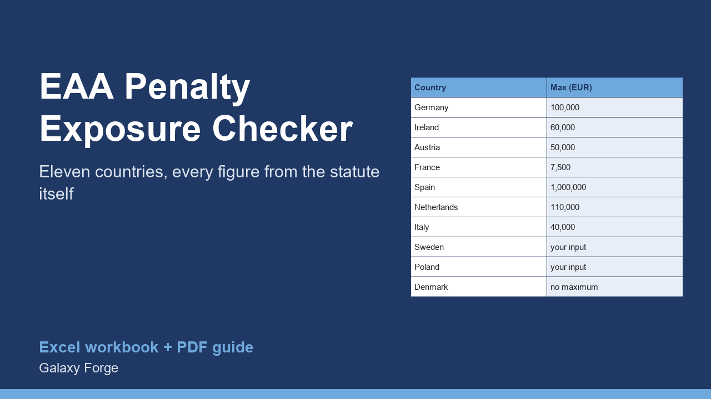

Enter your turnover and company size and see the maximum fine each of eleven EU countries' own EAA law sets for a company like yours, with the exact provision and a link to the official text for every figure.
Since 28 June 2025 the European Accessibility Act (EAA) applies to e-commerce and other consumer services offered in the EU, and each member state sets its own penalties. Published comparison tables disagree with each other and, in some cases, with the law they cite: one widely read table gives Germany EUR 500,000, while the German act sets EUR 100,000.
This workbook takes each country's maximum penalty from its own legal text (Germany, Ireland, Austria, France, Spain, the Netherlands, Italy, Sweden, Poland, Denmark and Luxembourg), records the provision and the official source, and applies the rules that depend on your company, such as Italy's 5% of turnover for very large providers, Austria's lower ceiling for small and medium-sized companies, and Poland's cap of 10% of turnover.
Where a law takes its amount from another statute, the workbook follows it to the official text: the French fine is the Code penal's 5th-class contravention, multiplied by five for a company, and the Dutch fine is the Criminal Code's 5th category at its 2026 value (EUR 110,000; vendor tables still give the 2025 value of EUR 103,000).
Two values change with statistics or markets, so the workbook asks you for them instead of inventing them: Poland's average salary and the krona exchange rate. Denmark's law sets no maximum at all; the workbook says so rather than showing a number.
1) On Inputs, enter your annual turnover in euro and whether you are a small or medium-sized company. 2) Optionally enter Poland's average monthly salary and the krona exchange rate. 3) Read Exposure: the statutory maximum per country and the highest one. 4) Open Register for the provision and the official source behind each figure.
Price: $19, one-time. Download: eaa_penalty_exposure_checker.xlsx (Inputs, Exposure, Register) and this guide. Works in Excel 2016 or later, Excel for Mac and Excel on the web; opens in Google Sheets and LibreOffice.
New product, listed 2026-11-06: no sales or reviews yet. Example figures in the workbook are illustrative.
This workbook summarises statutory maximum penalties as read in the official legal texts between 29 and 31 October 2026. It is not legal advice, says nothing about the fines regulators actually impose, and laws change; check the linked source before relying on any figure.